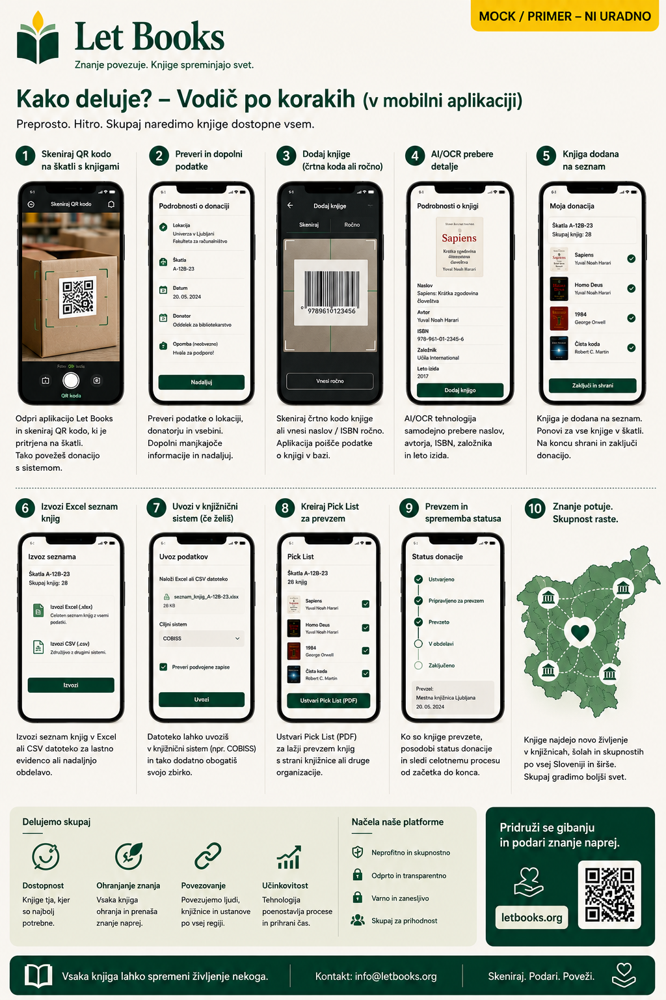

Trenutna dokumentacija in besedilo uporabniškega vmesnika sta podprta z AI. Opisani poteki dela predstavljajo smer projekta in ne produkcijske uvedbe.
Vodič za posameznike
Popišite prvo škatlo tako, da bo uporabna tudi čez nekaj mesecev.
Ta vodič je namenjen zasebnim donatorjem, družinam, prostovoljcem in manjšim organizacijam, ki želijo ohraniti koristne knjige in jih pripraviti za pregled ali donacijo.

Kdaj je ta vodič za vas
- Imate knjige doma, v kleti, kabinetu ali skladišču.
- Želite vedeti, kaj je v posamezni škatli.
- Želite delati predvsem po telefonu in s čim manj tipkanja.
- Knjige boste morda pozneje ponudili eni ali več ustanovam.
Kaj pomeni dober rezultat
- Ob skeniranju škatle vidite njeno vsebino.
- Nova knjiga je dodana v nekaj korakih.
- Izvoz za pregled je razumljiv in urejen.
- Zahtevane knjige lahko pozneje res hitro najdete.
Vaša prva škatla
Poimenujte lokacijo tako, da bo jasna tudi čez več tednov ali mesecev. Pomembna je doslednost, ne popolnost.
Poimenujte lokacijo
Primer: Klet / Polica 2 / Škatla 14. Kratko, jasno in stabilno.
Dodajte QR oznako
Ko skenirate oznako, takoj odprete pravo škatlo in ne mešate vsebin med seboj.
Delajte znotraj te škatle
Tako lokacije ni treba znova zapisovati za vsak posamezen izvod.
Hitro dodajanje knjig
Najhitrejši potek mora biti dovolj uporaben za kasnejši pregled, a hkrati dovolj hiter za delo ob policah.
Fotografirajte naslovnico
Naslovnica naj bo glavna vizualna orientacija v škatli.
Vnesite ali skenirajte ISBN
Če je ISBN viden, ga uporabite. Če ni, knjigo shranite in dopolnite pozneje.
Hitro shranite
Pri hitrem popisu ne potrebujete vseh podrobnosti pred naslednjo knjigo.
Dodajte dodatne strani po potrebi
Za pomembnejše ali nejasne knjige fotografirajte še naslovno in copyright stran.
Označite stanje izvoda
Dobro, sprejemljivo ali potreben dodaten pregled.
Nadaljujte brez ustavljanja
Uporabne so akcije kot shrani osnutek ali shrani in dodaj naslednjo.
Kateri podatki so najpomembnejši
- Naslov in avtor, če sta razvidna
- Leto ali izdaja, kadar sta vidna
- Stanje fizičnega izvoda
- Točna lokacija knjige
- Zasebne opombe za poznejši pregled ali iskanje
Kaj lahko dodate pozneje
- Predloge metapodatkov
- Povezave na zunanje kataloge
- Predloge prevodov
- Bolj bogat zgodovinski ali akademski kontekst
Izvoz za pregled knjižnice
Iz izbranih knjig sestavite donacijsko serijo in izvozite preglednico s stabilnimi identifikatorji. Tako lahko knjižnica označi želi, mogoče ali ne želi, ne da bi se opirala na nepopolne naslove.
Kako ponovno najti izbrane knjige
Ko odločitve uvozite nazaj, morajo biti zahtevani izvodi razvrščeni po sobi, polici in škatli. Prav to naredi popis res uporaben v praksi.
Zasebnost in zaupanje
Vaša točna lokacija, zasebne opombe in podatki o domu morajo ostati zasebni, razen če zavestno delite omejene informacije. Institucije potrebujejo podatke o knjigah, ne načrta vašega skladišča.
AI kot pomočnik, ne razsodnik
Če bodo pozneje vklopljeni OCR ali predlogi metapodatkov, jih obravnavajte kot pomoč. Stare izdaje, večjezičnost in oznake v knjigah pogosto zahtevajo človekovo presojo.
Primer uporabe: Družina podeduje profesorjevo tehnično knjižnico. Škatle označi, knjige fotografira, označi bolj poškodovane izvode, izvozi eno serijo za univerzitetno knjižnico in potem zahtevane knjige najde po točnih policah brez ponovnega prekopavanja celotne zbirke.